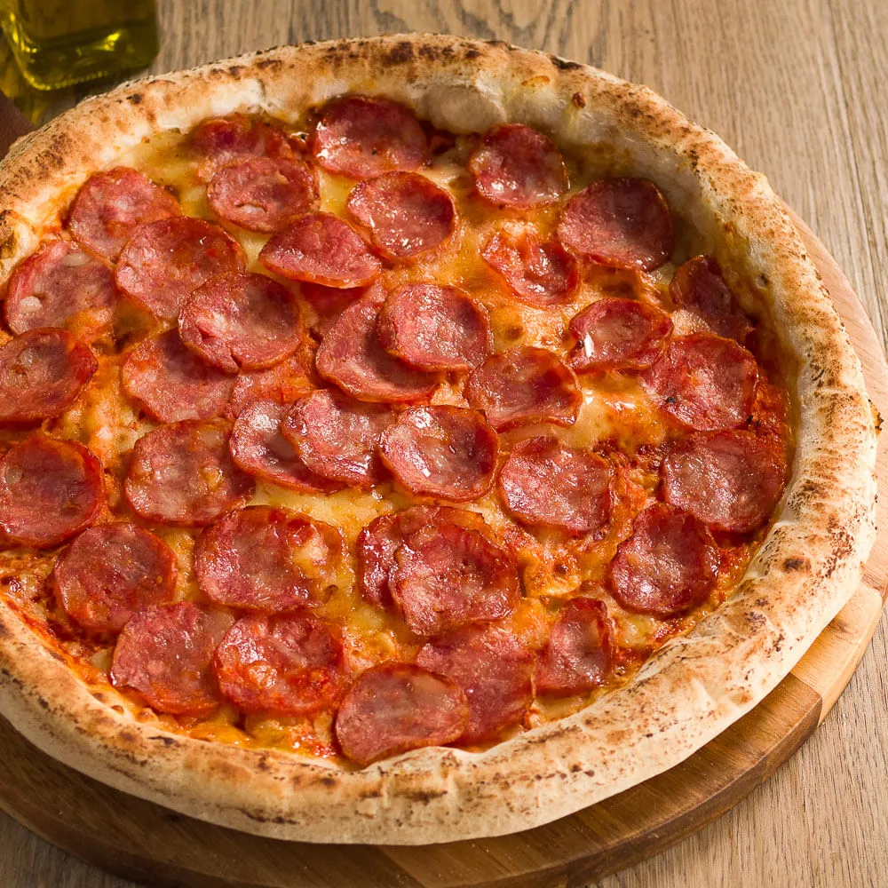

Tempo de Preparo
- Total: Aproxidamente 45 minutos
- Preparo: 25 minutos
- Forno: 20 minutos

Perfeita para reunir a família ou os amigos, essa pizza de calabresa é uma opção prática e deliciosa feita com massa de liquidificador, que fica leve e fofinha. O recheio clássico combina molho de tomate, bastante mussarela derretida, rodelas de linguiça calabresa e cebola, finalizados com orégano e azeitonas para um toque especial.